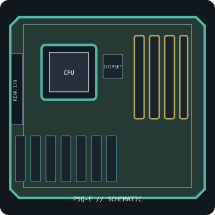

[ INDIVIDUAL COMPONENT // SYSTEM BOARD ]
ASUS P5Q-E (PCB Rev. 1.02G)
Intel P45 / LGA775 ATX board, 2008. PCB revision 1.02G with DDR2 memory, ICH10R SATA and revision-specific CPU/BIOS support. This record identifies one exact SKU/revision; verify the silkscreened board marking before firmware or component selection.

IDENTIFICATION: This entry is for P5Q-E, PCB revision 1.02G. Similar family names, chipset stepping and board revisions may use incompatible BIOS, layouts or connectors.
Specifications & compatibility
| Exact board / PCB revision | P5Q-E — PCB revision 1.02G |
|---|---|
| Platform / socket / chipset | 2008 Intel desktop platform; LGA775; Intel P45 Express + ICH10R |
| CPU compatibility | LGA775 Intel Core 2 Quad/Duo, Pentium and Celeron processors qualified in ASUS P5Q-E CPU support; check the exact FSB/stepping and minimum BIOS, particularly for 45 nm CPUs. |
| Form factor / dimensions | ATX, 305 × 244 mm |
| Memory | Four DDR2 DIMM slots, up to 16 GB dual-channel non-ECC unbuffered DDR2; DDR2-1200 is an OC profile. |
| Expansion | Three PCIe 2.0 x16-length slots with lane sharing (up to x16/x8/x4), two PCIe x1 and two PCI slots. |
| Storage | Six Intel SATA 3 Gb/s ports, PATA, and an auxiliary JMicron storage controller for eSATA/extra SATA; consult manual for connector sharing. |
| External I/O | Rear PS/2, USB 2.0, IEEE 1394, dual Gigabit Ethernet, analog audio and S/PDIF; additional USB/FireWire headers are board-specific. |
| BIOS / firmware support | ASUS CrashFree BIOS 3 and EZ Flash 2. Match the exact P5Q-E support page and CPU list; each processor entry defines its minimum BIOS. Firmware for P5Q, P5Q Pro or another P5Q board is not interchangeable. |
| PSU / case compatibility | Requires an ATX enclosure supporting a 305 × 244 mm board and standard ATX mounting points. Provide the 24-pin main ATX and 8-pin CPU 12 V feeds from a compatible ATX PSU. |
Installation and service notes
Confirm the exact CPU, minimum BIOS, DIMM type/capacity and supported slot/port mapping in the board-specific vendor support documents before purchase or installation. Socket fit is not proof of processor support; similarly named board firmware must not be cross-flashed.
Use ESD-safe handling, inspect the board for socket damage, leakage and corrosion, and keep loose screws or conductive debris away from the PCB. Check the case standoffs, PSU leads and cooler clearance against the manual before first power-on.
Manufacturer and manual sources
- ASUS P5Q-E specificationsOfficial manufacturer specification entry for this model.
- ASUS P5Q-E manual and BIOS supportOfficial manufacturer manual or revision-specific downloads for installation, CPU compatibility and BIOS support.
Specifications are archived for identification, not a guarantee that an aged board or used component is functional. Use the exact-revision vendor materials for final compatibility decisions.